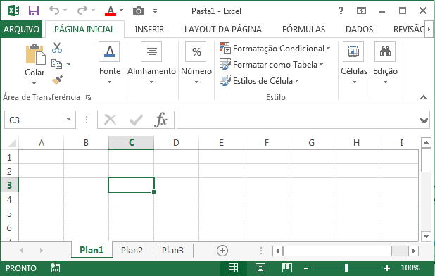

O Microsoft Excel é um dos programas mais utilizados do pacote Office e serve principalmente para criar, editar e analisar planilhas eletrônicas. Ele permite organizar dados em linhas e colunas, além de realizar cálculos automáticos por meio de fórmulas e funções. Muito usado em ambientes escolares, empresariais e pessoais, o Excel facilita a elaboração de tabelas, gráficos e relatórios financeiros ou estatísticos. Com ele, é possível controlar orçamentos, fazer listas, calcular médias, comparar valores e até criar dashboards visuais interativos. Sua interface intuitiva e suas diversas ferramentas tornam o Excel uma excelente solução para quem precisa lidar com grande volume de dados de forma rápida, prática e eficiente.
Uma planilha é um tipo de documento digital que organiza informações em um formato de tabela, composta por linhas e colunas. Cada ponto de cruzamento entre uma linha e uma coluna forma uma célula, onde podemos inserir dados como números, textos ou fórmulas. As planilhas são muito utilizadas para organizar, calcular e analisar informações, facilitando a visualização e o controle de dados. Elas são comuns em programas como o Excel, onde é possível automatizar cálculos, gerar gráficos, aplicar filtros e construir relatórios. As planilhas são úteis tanto em ambientes profissionais (como controle financeiro, de estoque ou de produção), quanto na vida pessoal (como listas de compras, cronogramas de estudo ou orçamentos domésticos).
| Função | O que faz | Exemplo de uso |
|---|---|---|
| SOMA() | Soma os valores de um intervalo | =SOMA(A1:A5) |
| MÉDIA() | Calcula a média dos valores | =MÉDIA(B1:B4) |
| MÁXIMO() | Mostra o maior valor em um intervalo | =MÁXIMO(C1:C10) |
| MÍNIMO() | Mostra o menor valor em um intervalo | =MÍNIMO(D1:D10) |
| SE() | Faz uma verificação lógica | =SE(A1>10;"Sim";"Não") |